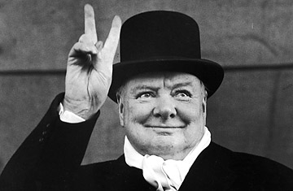

Sir Winston Churchill
The man who saved Europe

Winston Churchill with his typical gesture
Here's a timeline of Churchill's life:
- 1874: Born, 30 November, eldest son of Rt. Hon. Lord Randolph Churchill, 3rd son of 7th Duke of Marlborough, and Jennie Jerome.
- 1888-93: Attendance at Harrow School
- 1893-94: Cavalry cadet at Sandhurst Royal Military Academy
- 1895: Death of Lord Randolph Churchill, 24 January
- 1904: Moved from Conservative Party to Liberal Party, 31 May
- 1907: Became Privy Councillor, 1 May
- 1908: Married, 12 September, to Clementine, daughter of Sir Henry Hozier and Lady Blanche (née Ogilvy)
- 1922: Bought Chartwell Manor, Kent
- 1924: Returned to Conservative Party from Liberal Party
- 1931: Lecture tour in the United States
- 1940-45: Prime Minister, First Lord of the Treasury and Minister of Defence
- 1946: "Iron Curtain" Speech, Fulton, Missouri, 5 March
- 1951-55: Prime Minister and First Lord of the Treasury
- 1953: Awarded Nobel Prize for Literature
- 1965: Died, 24 January
Read more about Winston Churchill on his Wikipedia page.